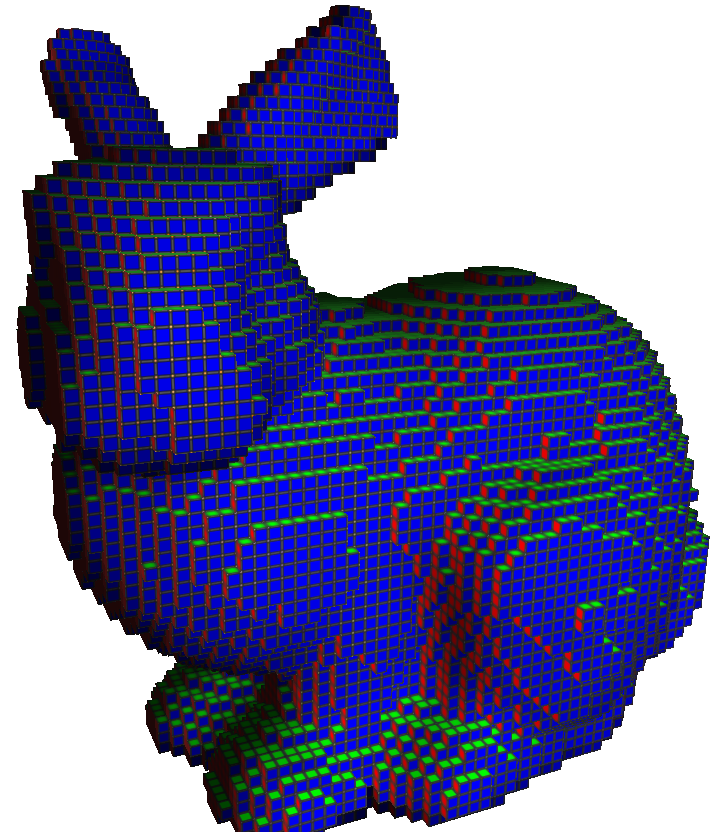

volSurfaceRegularization
Regularize a cubical complex into a smooth quadrangulated complex.
This is done by minimizing a quadratic energy function as decribed in ??. The variational formulation regularizes the position while aligning the regularized quads with an input normal vector field. In this tool, the input normal vector field can be either specified in the CSV input file, or computed using Integral Invariant (and -r option).
Usage: volSurfaceRegularization -input <volFileName> -o <regularizedcomplex.obj>
Allowed options are :
Positionals:
1 TEXT REQUIRED input vol filename for image shape (object voxels have values > 0) or input cvs filename for surfels and normals
1 TEXT REQUIRED output regularized obj
Options:
-h,--help Print this help message and exit
-i,--image-filename TEXT REQUIRED input vol filename for image shape (object voxels have values > 0) or input cvs filename for surfels and normals
-o,--regularized-obj-filename TEXT REQUIRED
output regularized obj
-n,--cubical-obj-filename TEXT output cubical obj
-k,--shape-noise FLOAT=0 noise shape parameter
[Option Group: Normal field estimator options]
Options:
-r,--normal-radius FLOAT=4 radius of normal estimator
[Option Group: Surface approximation options]
Options:
-p,--regularization-position FLOAT=0.001
vertex position regularization coeff
-c,--regularization-center FLOAT=0.01 face center regularization coeff
-a,--align FLOAT=1 normal alignment coeff
-f,--fairness FLOAT=0 face fairness coeff
-b,--barycenter FLOAT=0.1 barycenter fairness coeff
Example:
$ volSurfaceRegularization -i bunny.vol -o bunny_smooth.obj
You should obtain such a result:

Input cubical complex.

Smooth quadrangulated complex.
- See also
- volSurfaceRegularization.cpp